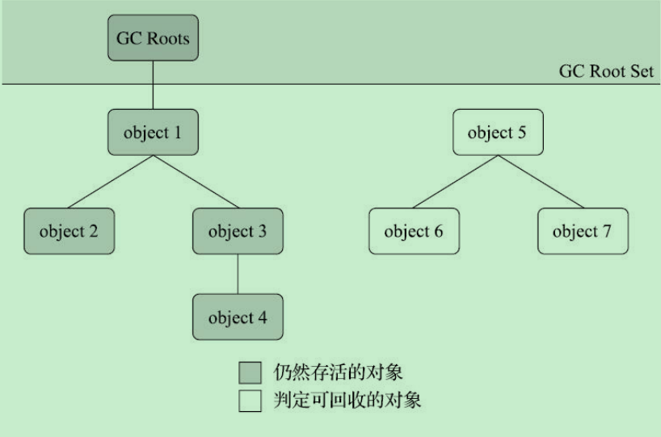
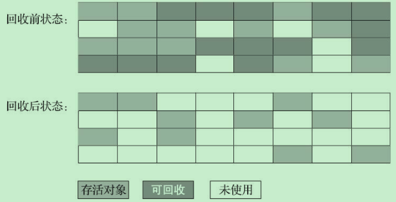
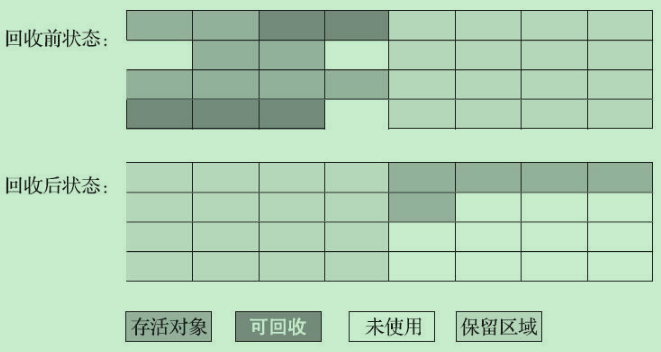
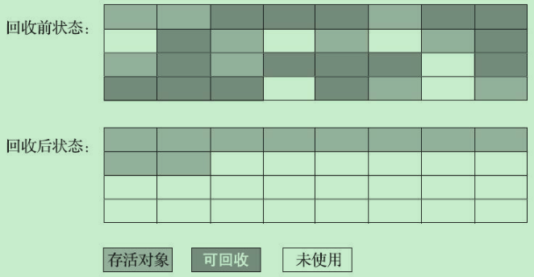

JVM-4-垃圾回收
垃圾回收是Java的特色，java的垃圾回收是JVM实现的，在不同的JVM中回收机制有所不同，堆内存的划分方式也是不一样的。
垃圾回收的主要目的是清除不再使用的对象，自动释放内存。
对象死亡判定
引用计数算法
在对象中添加一个引用计数器，每当有一个地方引用它时，计数器就加一；当引用失效时，计数器值减一；任何时刻计数器为零的对象就是不可能再被使用的。
引用计数法缺点如下
1 | public class ReferenceCountingGC { |
无法解决对象之间相互循环引用的问题，objA和objB这两个对象无任何引用，实际上这两个对象已经不可能在被访问，但是它们因为互相引用着对方，导致引用计数器都不为0，这两个对象也就无法回收。
可达性分析算法
为了判断对象是否存活，JVM引入了GC Roots。如果一个对象与GC Roots之间没有直接或者间接的引用关系，比如某个失去任何引用的对象，或者两个互相环岛状循环引用的对象等，判决这些对象“死缓”，是可以被回收。什么对象可以作为GC Roots呢？比如：静态属性中的引用对象、常量引用对象、虚拟机栈中引用的对象、本地方法栈中引用的对象。

| 算法 | 优点 | 缺点 |
|---|---|---|
| 引用计数算法 | 原理简单，判定效率高 | 需要大量额外处理，很难解决对象循环引用问题 |
| 可达性分析算法 | 算法成熟灵活，引用范围广泛 | 没有明显缺点 |
对象引用
Java中有四种对象引用形式，这四种引用强度依次逐渐减弱如下所示
强引用
传统的“引用”的定义，类似“Object obj = new Object()”这种引用关系。无论任何情况下，这种强引用的对象都不会被GC回收，即便出现OOM。
软引用
描述的是一些还有用，但是非必须对象。只被软引用关联着的对象，在OOM发生前，会把这些对象列入回收范围中进行第二次回收，如果这次回收还没有足够内存就会抛出OOM
弱引用
描述的是那些非必须的对象，程度比软引用更弱，弱引用对象只能生存到下一次垃圾回收。当垃圾收集器开始工作，无论当前内存是否足够，都会回收掉被弱引用关联的对象。
虚引用
一个对象是否有虚引用完全不会对其生存时间构成影响，也无法通过虚引用来取得一个对象实例。为对象设置虚引用关联的唯一目的只是为了能在这个对象被收集器回收时收到一个系统通知。
元数据区垃圾回收
元数据区垃圾回收两个部分的内容：废弃的常量和不再使用的类型。
判定不再使用的类，需要同时满足下面三个条件
- 该类的所有实例都已经被回收，也就是java堆中不存在该类及其任何派生子类的实例。
- 加载该类的类加载器已经被回收，这个条件除非是经过精心设计的可替换类加载器的场景，如OSGI、JSP的重加载等，否则通常是很难达成的。
- 该类对应的java.lang.Class对象没有在任何地方被引用，无法在任何地方通过反射访问该类的方法。
java虚拟机被允许对满足这三个条件的无用类进行回收，当不是必然被回收
垃圾回收算法
”标记–清除算法“
该算法会从每个GC Roots出发，依次标记有引用关系的对象，最后将没有被标记的对象清除。但是这种算法会带来大量的空间碎片，导致需要分配一个较大连续空间时容易触发FGC。为了解决这个问题，又提出了”标记–整理算法“，该算法类似计算机的磁盘整理，首先会从GC Roots出发标记存活的对象，然后将存活对象整理到内存空间的一端，形成连续的已使用空间，最后把已使用空间之外的部分全部清理掉，这样就不会产生空间碎片问题了。

缺点：
- 执行效率不稳定
- 内存空间的碎片化问题
”标记–复制算法“
为了能够并行地标记和整理将空间分为两块，每次只激活其中一块，垃圾回收时只需要把存活的对象复制到另一块未激活的空间上，将未激活空间标记为已激活，将已激活的标记为未激活，然后清除原空间中的原对象。堆内存空间分为较大的Eden和两块较小的Survivor，每次只使用Eden和Survivor区中的一块。这种情形下的“Mark-Copy”减少了内存空间的浪费。

缺点：
- 使内存的空间缩小为原来的一一半，空间浪费比较多
标记–整理算法
标记–复制算法在对象存活率较高时就要进行较多的复制操作，效率就会降低。更关键的是，如果不想浪费50%的空间，就需要有额外的空间进行分配担保，以应对被使用的内存中所有对象都100%存活的极端情况，所以在老年代一般不能直接选用这种算法。

垃圾回收器(Garbage Collector)
垃圾回收器是实现垃圾回收算法并应用在JVM环境中的内存空间管理模块。当前实现的垃圾回收器有数十种，例如Serial、CMS、G1等
垃圾回收器参数总结
| 参数 | 描述 |
|---|---|
| UseSerialGC | 虚拟机运行Client模式下的默认值，打开次开关后，使用Serial+Serial Old的收集器组合进行内存回收 |
| UseParNewGC | 打开次开关后，使用parNew + Serial Old的收集器组合进行内存回收，在JDK9不再支持 |
| UseConcMarkSweepGC | 打开次开关后，使用ParNew + CMS + Serial Old的收集器组合进行内存回收。Serial Old收集器将作为CMS收集器出现“Concurrent Mode Failure”失败后的后备收集器使用 |
| UseParallelGC | JDK9之前虚拟机运行在Server模式下的默认值，打开此开关后，使用parallel Scavenge + Serial Old (PS MarkSweep)的收集器组合进行内存回收 |
| UseParallelOldGC | 打开此开关后，使用Parallel Scavenge + Parallel Old的收集器组合进行内存回收 |
| SurvivorRatio | 新生代中Eden区域与Survivor区域的容量比值，默认为8，代表Eden:Survivor=8:1 |
| PretenureSizeThreshold | 直接晋升老年代的对象大小，设置整个参数后，大于这个参数的对象将直接在老年代分配 |
| MaxTenuringThreshold | 晋升到老年代的对象年龄。每个对象在坚持过一次Minor GC之后，年龄就会增加1，当超过这个参数值时就进入老年代 |
| UseAdaptiveSizePolicy | 动态调整Java堆中各个区域的大小以及进入老年代的年龄 |
| HandlePromotionFailre | 是否允许分配担保失败，即老年代的剩余空间不足以应付新生代的整个Eden和Survivor区的所有对象都存活的极端情况 |
| ParallelGCThreads | 设置并行GC进行内存回收的线程数 |
| GCTimeRatio | GC时间占总时间的比率，默认值为99，即允许1%的GC时间。仅在使用Parallel Scavenge收集器时生效 |
| MaxGCPAuseMilis | 设置GC的最大停顿时间，仅在使用Parallel Scavenge收集器时生效 |
| CMSInitiatingOccupancyFraction | 设置CMS收集器在老年区空间被使用多少后触发垃圾收集。默认值为68%。仅在使用CMS收集器时生效 |
| UseCMSCompactAtFullCollection | 设置CMS收集器在完成垃圾收集后是否要进行一次内存碎片整理。仅在使用CMS收集器时生效，此参数从JDK9开始废弃 |
| CMSFullGCsBeforeCompaction | 设置CMS收集器在完成垃圾收集后再启动一次内存碎片整理。仅在使用CMS收集器时生效，此参数从JDK9开始废弃 |
| UseG1GC | 使用G1收集器，这个是JDK9后的Server模式默认值 |
| G1HeapRegionsize=n | 设置Region的大小，并非最终值 |
| MaxGCPauseMillis | 设置G1收集过程目标时间，默认值是200ms，不是硬性条件 |
| G1NewSizePercent | 新生代最小值，默认是5% |
| G1MaxNewSizePercent | 新生代最大值，默认值是60% |
| ParallelGCThreads | 用户线程冻结期间并行执行的收集器线程数 |
| ConcGCThreads=n | 并发标记，并发整理的执行线程数，对不同的收集器，根据其能够并发的阶段，有不同的含义 |
| InitiatingHeapOccupancyPercent | 设置触发标记周期的Java堆占用率阈值。默认值是45%。这里的java堆占比指的是non_young_capacity_bytes，包括old+humongous |
| UseShenandoahGC | 使用shenandoah收集器。这个选项在OracleJDK中不被支持，只能在OpenJDK 12或者某些支持Shenandoah的Backport发行版使用。目前仍然要配合 -XX:+UnlockExperimentalVMOptions使用 |
| ShenandoahGCHeuristics | Shenandoah何时启动一次GC过程，其可选值有adaptive、static、compact、passive、aggressive |
| UseZGC | 使用ZGC收集器，目前仍然要配合-XX:+UnlockExperimentalVMOptios使用 |
| UseNUMA | 启用NUMA内存分配支持，目前只有Parallel和ZGC支持，以后G收集器可能也会支持该选项 |